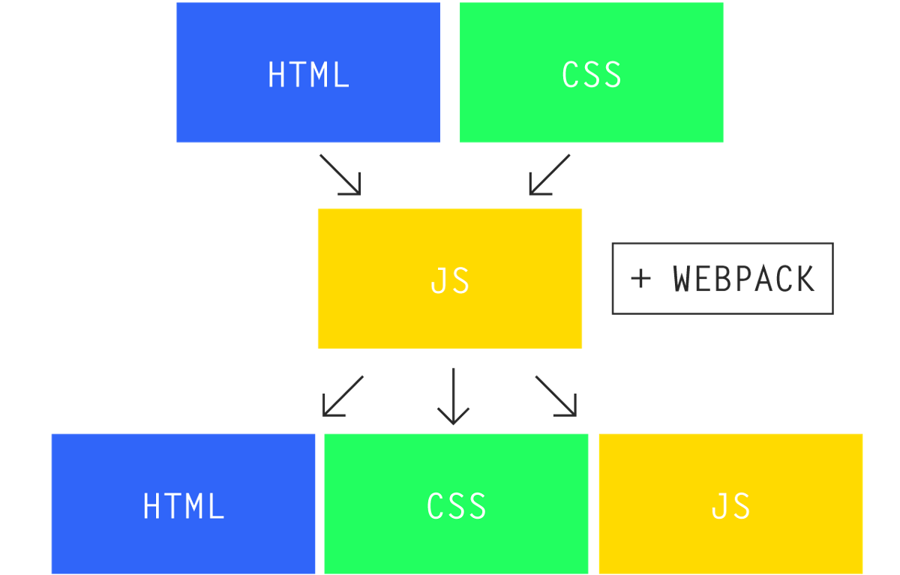

Jonathan MirCha Instructor Web & Front end Devsignloper.
Entusiasta de la educación digital.
Dirijo Bextlán.
Maratonista(x10) Fitness. Celiaco por amor.
Las aplicaciones Web se parecen cada vez más a las aplicaciones de escritorio.
Actualmente tenemos dos formas de enfrentarnos a un proyecto web:
La forma tradicional utilizando renderizaciones desde el servidor utilizando frameworks como Symphony (PHP), Rails (Ruby) o Django (Python) y jugueteando con JavaScript (jQuery) en el cliente.
La otra son las SPA's (Single Page Applications) donde se utiliza al servidor para renderizar objetos JSON los cuales serán tratados por un framework o librería JavaScript en el cliente.
En ambos casos:
Utilizamos elementos HTML como UI
Utilizamos el DOM de JS para manipular la UI
La UI reacciona a eventos
Gestionamos diferentes cosas (pantallas y/o páginas, datos, estados, etc.)
Pero hay un problema...
HTML es un lenguaje para crear documentos, NO aplicaciones
El DOM y las API's JS tienen diferencias entre los navegadores
Web Components constiste en distintas tecnologías independientes. Puedes pensar en Web Components como en widgets de interfaz de usuario reusables que son creados usando tecnología Web abierta. Son parte del navegador, y por lo tanto no necesitan bibliotecas externas como jQuery o Dojo. Un Web Component puede ser usado sin escribir código, simplemente añadiendo una sentencia para importarlo en una página HTML. Web Components usa capacidades estándar, nuevas o aún en desarrollo, del navegador. MDN
Soluciones No Estándares: ¡Frameworks y Librerías!
La mayoría de los frameworks y librerías han sido creadas por alguna necesidad en particular, y con el tiempo, si tienen aceptación suelen crecer en potencia, robustez y complejidad.
Pero NO existe el framework o librería perfect@ que pueda solucionarlo todo...
...solo existe el programador pragmático que sabe elegir sus herramientas.
Evolución de los Frameworks y Librerías JS
Hoy l@s Frameworks y Librerías JS modernas nos ofrecen:
React, también conocido como React.js o ReactJS, es una librería JavaScript opensource diseñada para crear interfaces de usuario
No es un framework, es una librería UI
El origen de React comienza en 2011 cuando Pete Hunt y un pequeño equipo en Facebook comienzan a crear un port de XHP (versión de PHP creada por Facebook).
XHP fue diseñada para minimizar los ataques XSS (Cross Site Scripting), permitiendo una sintaxis XML con el propósito de crear elementos HTML customizables y reusables.
Sin embargo existía un problema las SPA's requieren mayor numero de peticiones al servidor y XHP no conseguía resolver esto.
Con esta problemática, un pequeño grupo de ingenieros de Facebook intentó utilizar XHP en el navegador usando JavaScript y el resultado fue React, liberándose como opensource en 2013.
Facilita el desarrollo de Single Page Applications (SPA's), obteniendo un gran rendimiento y ofreciendo una forma de desarrollo más cercana a la creación de videojuegos que a la de aplicaciones.
SÍ... leíste bién...
videojuegos
¿Cómo funcionan las SPA's?
Cuando los datos en una aplicación son actualizados, la interfaz de usuario se actualiza de manera automática reflejando esos cambios
El framework/librería JS lo gestiona por ti.
En un un enfoque de data-binding tienes una especie de widgets que el usuario manipulará y se quedarán todo el tiempo en la pantalla.
La diferencia con React es que se asemeja al engine de un videojuego.
Con cada cambio de estado se borra todo lo que sucede en la pantalla y se vuelve a dibujar toda la escena.
Con este enfoque podemos decir que React es un renderizador inmediato, mientras que los sistemas basados en data-binding se consideran renderizadores persistentes.
React permite crear aplicaciones web complejas que utilizan un gran intercambio de datos.
Su principio es sencillo: declarative and composable.
Mientras que el resto de framework o librerías continúan introduciendo JavaScript en el HTML y usando flujo de datos bidireccional...
...React hace todo lo contrario, incluye HTML en su JavaScript (JSX) y...
...promueve el flujo en un solo sentido, haciendo más fácil la planeación de aplicaciones y detección de errores.
Si piensas en el paradigma del Modelo-Vista-Controlador (MVC), React es únicamente la V, sólo se preocupará de la interfaz de usuario. Esto hace que se pueda utilizar en combinación de otras librerías o frameworks JS.
Además gracias a su enorme y creciente comunidad, React, esta generando una gran biblioteca de extensiones, las cuales no sólo se ocupan de la interfaz de usuario sino que te ayudarán a complementar los requerimientos de tus aplicaciones.
Actualmente React está siendo utilizado por organizaciones como Khan Academy, Netflix, Yahoo, Airbnb, Uber, Facebook, Instagram, WhatsApp, Sony, Attlasian entre otras.
Esto demuestra el gran estado en el que se encuentra React, con una gran aceptación por muchas empresas líderes en su sector y asegurando por tanto un desarrollo continuo.
¿Cómo funciona React?
Renderiza todo con cada cambio
Virtual DOM
Eventos sintéticos
Renderiza todo con cada cambio
No necesita de Observers o Bindings. React es funcional y todo componente debe ser autogestionable: debe saber cuando volver a renderizarse ya sea por cambios de estado o por paso de propiedades heredadas.
Virtual DOM
Modificar el DOM es una operación costosa que React hace por nosotros, de una manera sencilla, trata al DOM como si de una GPU se tratará.
Como funciona el Virtual DOM
Los componentes de React no generan HTML, sino código que será una descripción virtual del DOM
Se estructura en forma de árbol con un único nodo raíz
Cuando React ejecuta render, se guarda una descripción en memoria
En el próximo render, compara la nueva descripción con la anterior y
Decide qué debe cambiar en el DOM real
Garantiza que se realizarán las mínimas operaciones necesarias en el DOM, de la forma más eficiente
Para el programador funciona como un render completo, cada vez
Virtual DOM
Eventos sintéticos
React implementa su propio sistema de eventos, por lo que no tendrás que preocuparte por tener librerías para el manejo del DOM como jQuery.
Eventos sintéticos
React crea un único manejador de evento nativo en el nivel superior de la estructura de cada componente. Este sistema de eventos está normalizado para que sea funcional en todos los navegadores e incluso es capaz de diferenciar entre eventos desktop y móviles.
Para hacer un desarrollo modular, utilizaremos webpack
Nos permite separar nuestro código en archivos y carpetas, utilizar npm o yarn como gestor de dependencias
Y generar un bundle: único archivo JS con toda nuestra aplicación
¿Qué es Webpack?
Es un empaquetador de archivos para aplicaciones JavaScript modernas, totalmente configurable y
A diferencia de los Task Runners (como Grunt y Gulp) donde los procesos se gestionan de forma separada, en webpack, si se conoce el origen, todo se compila en un único archivo

Webpack
Crea una gráfica de todas las dependencias de la aplicación. Tiene un archivo de configuración, denominado webpack.config.js, donde se define todo el proceso de build en un objeto JS que tiene 4 conceptos clave:
Entry (indica cuál es el punto(s) de entrada)
Output (indica cuál es el punto(s) de salida)
Loaders (realizan transformaciones en los archivos)
yarn global add package //instalación global
yarn add package //instalación dependencia de proyecto
yarn add package [--dev/-D] //instalación dependencia de desarrollo
yarn script //correr un script npm
Un componente es una pieza de código que se dedica a hacer o resolver una tarea o problema en partícular y debe de hacerlo muy bien. Además forma parte de un todo más grande o complejo.
¿Qué es un Componente?
React encapsula absolutamente todo, no encontrarás una división en varios fichero entre la vista y la lógica de la misma.
Los componentes React normalmente serán lo suficientemente pequeños para que no tengas la necesidad de dividir nada, y en el caso de que sea así posiblemente sea mejor dividir tu componente en componentes más pequeños y reutilizables.
es una extensión de JavaScript creada por Facebook para la creación de componentes en React. Sirve de preprocesador de los elementos del componente y transforma el código a JavaScript.
Características JSX
Los nombres de componentes deben definirse con UpperCamelCase
Los elementos JSX se cierran como XML con </ >
Se puede agregar código JS encerrándolo en { }
Atributos HTML soportados en JSX
Soporta todos los atributos data-* y aria-* así como:
accept acceptCharset accessKey action allowFullScreen allowTransparency alt
async autoComplete autoFocus autoPlay cellPadding cellSpacing charSet checked
classID className colSpan cols content contentEditable contextMenu controls
coords crossOrigin data dateTime defer dir disabled download draggable encType
form formAction formEncType formMethod formNoValidate formTarget frameBorder
headers height hidden high href hrefLang htmlFor httpEquiv icon id label lang
list loop low manifest marginHeight marginWidth max maxLength media mediaGroup
method min multiple muted name noValidate open optimum pattern placeholder
poster preload radioGroup readOnly rel required role rowSpan rows sandbox scope
scoped scrolling seamless selected shape size sizes span spellCheck src srcDoc
srcSet start step style tabIndex target title type useMap value width wmode
Casi todos los componentes de React tienen un ciclo de vida.
Se dividen en tres tipos: montaje, actualización y desmontaje.
Ofrece puntos de captura para ejecutar código en cada etapa
Ciclo de Vida de los Componentes
Ciclo de Vida de los Componentes
Fase de Montaje
componentWillMount()
Se ejecuta una vez, tanto en cliente como servidor, inmediatamente antes del primer render(). Si usas setState en este método, render() se ejecutará solo una vez a pesar de haber disparado un cambio de estado.
Ciclo de Vida de los Componentes
Fase de Montaje
componentDidMount()
Se ejecuta una vez, sólo en cliente, inmediatamente después del primer render(). Las referencias en el DOM ya existen y es el lugar ideal para hacer peticiones AJAX, integrar librerías externas, crear eventos, poner timers, etc.
El componentDidMount() de los hijos será ejecutado antes que el del padre
Ciclo de Vida de los Componentes
Fase de Actualización
componentWillReceiveProps(nextProps)
Se ejecuta cuando el componente reciba nuevas propiedades. No se ejecuta con el primer render().
Esta función recibe como parámetro las nuevas propiedades, muy útil para hacer comparaciones y actualizar el estado según las propiedades.
Ciclo de Vida de los Componentes
Fase de Actualización
componentWillUpdate(nextProps, nextState)
Se ejecuta antes que el componente vaya a renderizarse otra vez con nuevas propiedades o estado. No se ejecuta con el primer render(). Recibe como parámetro las nuevas propiedades y el nuevo estado.
En componentWillUpdate() no se debe usar setState para cambiar el estado o se entrará en un bucle infinito.
Ciclo de Vida de los Componentes
Fase de Actualización
shouldComponentUpdate(nextProps, nextState)
Se ejecuta justo antes de volver a renderizarse con las nuevas props y estado. No se ejecuta con el primer render().
Esta función recibe como parámetro las nuevas propiedades y el nuevo estado y siempre debe devolver un valor booleano. Por defecto siempre devuelve true.
Ciclo de Vida de los Componentes
Fase de Actualización
componentDidUpdate(prevProps, prevState)
Se ejecuta justo después de renderizarse. No se ejecuta con el primer render(). Recibe como parámetro las propiedades y el estado anteriores.
Este es un buen lugar para trabajar con el DOM del componente, porque en este punto tenemos todos los cambios representados con el nuevo render().
Ciclo de Vida de los Componentes
Fase de Desmontaje
componentWillUnmount(prevProps, prevState)
Se ejecuta justo antes que el componente se elimine del DOM.
Especialmente útil para limpiar eventos asignados a las referencias del DOM del componente, eliminar timers y limpiar observables.
 Jonathan MirCha - @jonmircha
Jonathan MirCha - @jonmircha